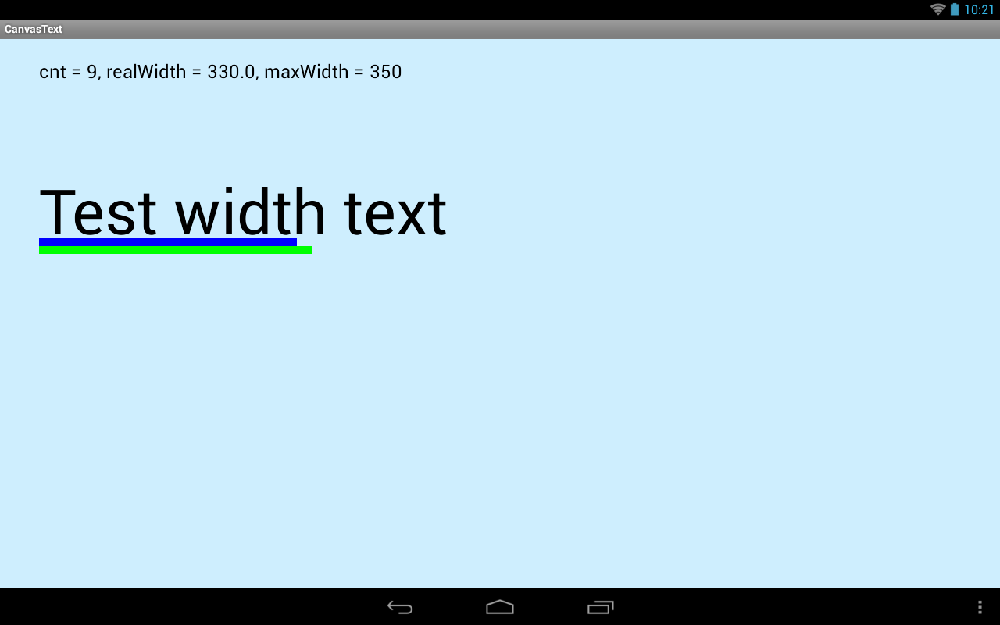
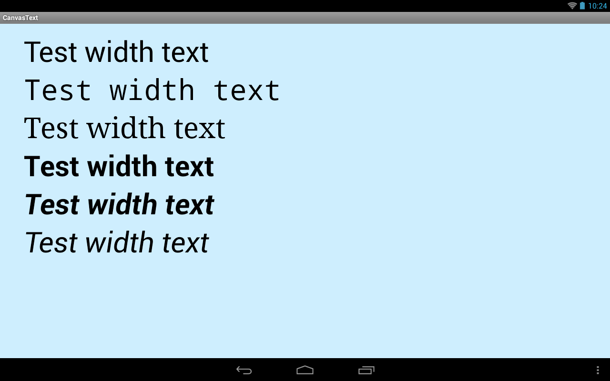
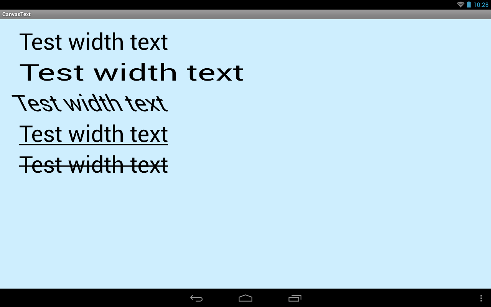
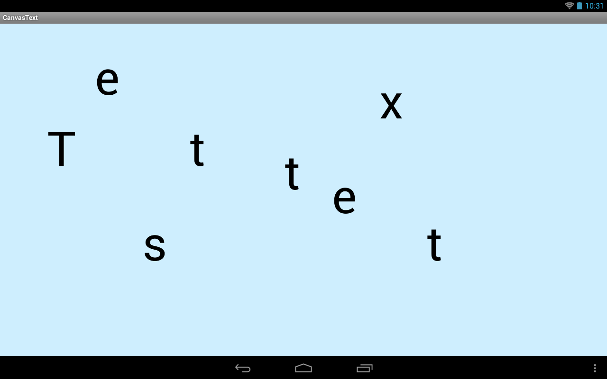

В этом уроке:
- работаем с текстом
В прошлых уроках мы уже выводили текст, настраивали для него выравнивание, использовали path для указания линии текста. Посмотрим какие еще операции доступны при работе с текстом.
Определение размеров
Есть несколько методов, позволяющих определить размеры текста.
Для начала определим ширину всего текста и каждого символа по отдельности.
Создадим проект:
Project name: P1491_CanvasText
Build Target: Android 4.0
Application name: CanvasText
Package name: ru.startandroid.develop.p1491canvastext
Create Activity: MainActivity
MainActivity.java:
package ru.startandroid.develop.p1491canvastext;
import android.app.Activity;
import android.content.Context;
import android.graphics.Canvas;
import android.graphics.Color;
import android.graphics.Paint;
import android.os.Bundle;
import android.view.View;
public class MainActivity extends Activity {
@Override
protected void onCreate(Bundle savedInstanceState) {
super.onCreate(savedInstanceState);
setContentView(new DrawView(this));
}
class DrawView extends View {
Paint fontPaint;
Paint redPaint;
String text = "Test width text";
int fontSize = 100;
float[] widths;
float width;
public DrawView(Context context) {
super(context);
redPaint = new Paint();
redPaint.setColor(Color.RED);
fontPaint = new Paint(Paint.ANTI_ALIAS_FLAG);
fontPaint.setTextSize(fontSize);
fontPaint.setStyle(Paint.Style.STROKE);
// ширина текста
width = fontPaint.measureText(text);
// посимвольная ширина
widths = new float[text.length()];
fontPaint.getTextWidths(text, widths);
}
@Override
protected void onDraw(Canvas canvas) {
canvas.drawARGB(80, 102, 204, 255);
canvas.translate(50, 250);
// вывод текста
canvas.drawText(text, 0, 0, fontPaint);
// линия шириной в текст
canvas.drawLine(0, 0, width, 0, fontPaint);
// посимвольные красные точки
canvas.drawCircle(0, 0, 3, redPaint);
for (float w : widths) {
canvas.translate(w, 0);
canvas.drawCircle(0, 0, 3, redPaint);
}
}
}
}В конструкторе DrawView мы создаем и настраиваем fontPaint, который будет использован для вывода текста. Здесь же мы вычисляем размеры текста. Метод measureText вернет ширину указанного текста. Сохраним ее в переменную width. А метод getTextWidths позволяет получить массив, содержащий значения ширины для каждого символа текста. Используем массив widths, размер которого равен кол-ву символов в тексте.
В onDraw рисуем текст. А под текстом рисуем линию шириной равной ранее полученной ширине текста - width, и используя массив widths выводим красные точки, отмечая ширину каждого символа.
Результат:

Далее рассмотрим метод breakText. Он позволит нам узнать сколько символов текста поместится в указанную нами ширину.
Перепишем класс DrawView:
class DrawView extends View {
Paint p;
String text = "Test width text";
int fontSize = 80;
int maxWidth = 350;
float realWidth = 0;
int cnt = 0;
String info = "";
public DrawView(Context context) {
super(context);
p = new Paint(Paint.ANTI_ALIAS_FLAG);
p.setTextSize(fontSize);
// кол-во символов и их ширина
float[] measuredWidth = new float[1];
cnt = p.breakText(text, true, maxWidth, measuredWidth);
realWidth = measuredWidth[0];
info = "cnt = " + cnt + ", realWidth = " + realWidth
+ ", maxWidth = " + maxWidth;
}
@Override
protected void onDraw(Canvas canvas) {
canvas.drawARGB(80, 102, 204, 255);
// данные о ширине
p.setTextSize(24);
canvas.drawText(info, 50, 50, p);
// текст
p.setTextSize(fontSize);
canvas.drawText(text, 50, 250, p);
p.setStrokeWidth(10);
// полоса реальной ширины урезанного текста
p.setColor(Color.BLUE);
canvas.drawLine(50, 260, 50 + realWidth, 260, p);
// полоса лимита
p.setColor(Color.GREEN);
canvas.drawLine(50, 270, 50 + maxWidth, 270, p);
}
}В конструкторе DrawView вызываем метод breakText. На вход передаем:
- текст
- true, означает что пойдем по тексту вперед, начиная с первого символа. Если false, то пойдем с конца.
- ширину, которая будет ограничивать текст
- массив, для получения точного значения ширины
Метод breakText возвращает кол-во символов.
Т.е. мы у объекта Paint спрашиваем, сколько символов указанного текста text влезет в указанную ширину maxWidth. Ответ мы получаем в переменную cnt. А в массив measuredWidth также попадает точная ширина урезанного текста, для удобства сохраним ее в переменную realWidth.
В onDraw выводим текст с полученными данными, искомый текст и две полосы для наглядности. Синяя полоса покажет точную ширину (realWidth) урезанного текста, а зеленая покажет лимит (maxWidth), который мы задавали.
Результат:

maxWidth у нас равен 350. Метод breakText выяснил, что из указанного текста в 350 px влезет лишь 9 символов и они займут 330 px по ширине.
Синяя полоса показывает ширину урезанного текста. Видно что над этой полосой 9 символов (включая пробел).
Зеленая полоса показала лимит, который мы ставили - 350.
Среди методов измерения также есть метод getTextBounds, который позволит получить вам прямоугольник, в который заключен текст.
Шрифты, стили
Рассмотрим возможность использования типов и стилей шрифтов.
Перепишем класс DrawView:
class DrawView extends View {
Paint p;
String text = "Test width text";
int fontSize = 60;
float y = 80;
public DrawView(Context context) {
super(context);
p = new Paint(Paint.ANTI_ALIAS_FLAG);
p.setTextSize(fontSize);
p.setStyle(Paint.Style.STROKE);
}
@Override
protected void onDraw(Canvas canvas) {
canvas.drawARGB(80, 102, 204, 255);
// обычный текст
canvas.translate(50, y);
canvas.drawText(text, 0, 0, p);
// моноширинный
canvas.translate(0, y);
p.setTypeface(Typeface.create(Typeface.MONOSPACE, Typeface.NORMAL));
canvas.drawText(text, 0, 0, p);
// с засечками
canvas.translate(0, y);
p.setTypeface(Typeface.create(Typeface.SERIF, Typeface.NORMAL));
canvas.drawText(text, 0, 0, p);
// обычный жирный
canvas.translate(0, y);
p.setTypeface(Typeface.create(Typeface.DEFAULT, Typeface.BOLD));
canvas.drawText(text, 0, 0, p);
// обычный жирный курсивный
canvas.translate(0, y);
p.setTypeface(Typeface.create(Typeface.DEFAULT, Typeface.BOLD_ITALIC));
canvas.drawText(text, 0, 0, p);
// обычный курсивный
canvas.translate(0, y);
p.setTypeface(Typeface.create(Typeface.DEFAULT, Typeface.ITALIC));
canvas.drawText(text, 0, 0, p);
}
}В onDraw мы выводим один и тот же текст, используя различные типы и стили шрифта. Для этого используем метод setTypeface, который требует на вход Typeface. Создать Typeface можно методом create, который требует на вход тип и стиль.
Результат:

Сначала используем шрифт по умолчанию, затем строим различные комбинации
из типов:
MONOSPACE – моноширинный, т.е. ширина всех символов одинакова
SERIF – шрифт с засечками
DEFAULT - шрифт по умолчанию
и стилей:
NORMAL – обычный
BOLD – жирный
BOLD_ITALIC – жирный курсивный
ITALIC - курсивный
Кроме системных шрифтов, существует возможность использовать свои шрифты. Для этого вместо метода Typeface.create необходимо использовать другие его разновидности. Например createFromAsset. Помещаете ваш шрифт в папку assets и в методе createFromAsset указываете имя файла.
Рассмотрим еще несколько методов форматирования текста.
Перепишем класс DrawView:
class DrawView extends View {
Paint p;
String text = "Test width text";
int fontSize = 60;
float y = 80;
public DrawView(Context context) {
super(context);
p = new Paint(Paint.ANTI_ALIAS_FLAG);
p.setTextSize(fontSize);
}
@Override
protected void onDraw(Canvas canvas) {
canvas.drawARGB(80, 102, 204, 255);
// обычный текст
canvas.translate(50, y);
canvas.drawText(text, 0, 0, p);
// растянутый
canvas.translate(0, y);
p.setTextScaleX(1.5f);
canvas.drawText(text, 0, 0, p);
p.setTextScaleX(1);
// наклоненный
canvas.translate(0, y);
p.setTextSkewX(0.5f);
canvas.drawText(text, 0, 0, p);
p.setTextSkewX(0);
// подчеркнутый
canvas.translate(0, y);
p.setUnderlineText(true);
canvas.drawText(text, 0, 0, p);
p.setUnderlineText(false);
// зачеркнутый
canvas.translate(0, y);
p.setStrikeThruText(true);
canvas.drawText(text, 0, 0, p);
p.setStrikeThruText(false);
}
}setTextScaleX – позволяет растянуть/сжать текст
setTextSkewX – наклон текста
setUnderlineText – подчеркнутый текст
setStrikeThruText – зачеркнутый текст
Результат:

Прочее
Метод drawPosText позволяет при выводе раскидать текст посимвольно по различным точкам
Перепишем класс DrawView:
class DrawView extends View {
Paint p;
String text = "Test text";
int fontSize = 100;
float pos[];
public DrawView(Context context) {
super(context);
p = new Paint(Paint.ANTI_ALIAS_FLAG);
p.setTextSize(fontSize);
pos = new float[] { 100, 300, 200, 150, 300, 500, 400, 300, 500,
250, 600, 350, 700, 400, 800, 200, 900, 500 };
}
@Override
protected void onDraw(Canvas canvas) {
canvas.drawARGB(80, 102, 204, 255);
canvas.drawPosText(text, pos, p);
}
}В конструкторе создаем массив pos. В нем указаны координаты точек, по которым поочередно будут раскиданы символы текста.
В onDraw вызываем drawPosText и передаем ему текст и массив.
Результат:

Методы измерения можно использовать не только в рисовании. Вы можете для обычного TextView получить объект Paint методом getPaint, и далее уже вызывать необходимые вам методы. А метод setTypeface (для задания шрифта) у TextView есть свой.